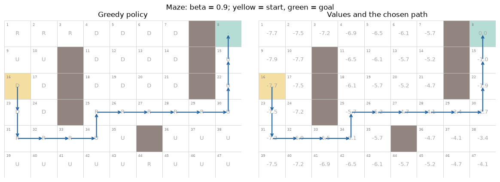
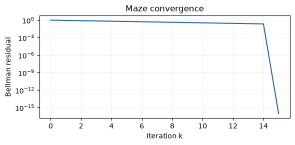
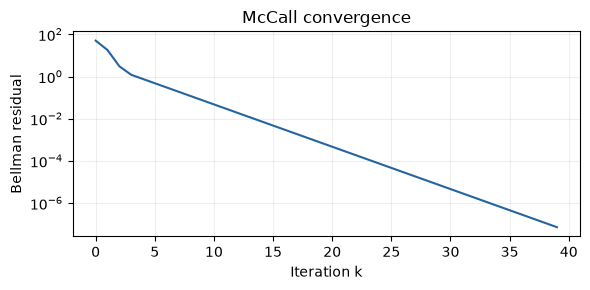
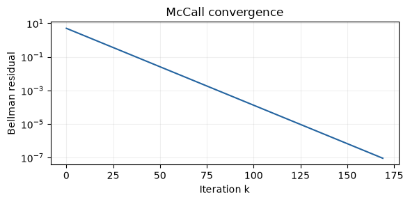
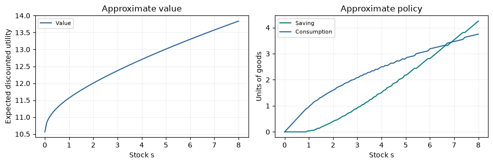
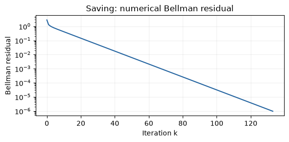
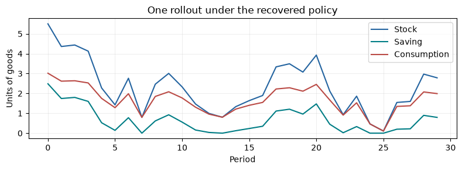

Lab 3: Value Function Iteration in VS Code
Open this project folder in VS Code and follow setup instructions for setup. Run the notebook from top to bottom.
mdp.py defines the input format. The three model files build the inputs; vfi.py contains the only VFI algorithm. This notebook imports those files and displays the results.
import numpy as np
import matplotlib.pyplot as plt
from maze import Maze
from mccall import McCallModel
from saving import ConsumptionSavingModel
from vfi import value_iteration, simulate_policy
from figures import (plot_maze, plot_convergence, plot_mccall,
plot_saving, plot_saving_rollout)
np.set_printoptions(precision=4, suppress=True)1. Maze
Use the lecture maze with \(\beta=0.9\). Each move costs \(1\), including entry into the absorbing goal; later rewards are zero. The start is cell 16 and the goal is cell 8. Python index i corresponds to lecture cell i + 1. Action codes 0, 1, 2, 3 mean U, D, L, R.
maze = Maze(beta=0.9)
print("Reward table:", maze.rewards.shape)
print("Transition table:", maze.P.shape)
# Inspect the MDP input for the action R at the start.
i, j = maze.start, 3
print("Reward:", maze.rewards[i, j])
print("Possible next cells:", np.flatnonzero(maze.P[i, j]) + 1)
print("Their probabilities:", maze.P[i, j, maze.P[i, j] > 0])Reward table: (47, 4)
Transition table: (47, 4, 47)
Reward: -1.0
Possible next cells: [17]
Their probabilities: [1.]maze_result = value_iteration(maze)
path = maze.path(maze_result["policy"])
print("Value at start:", maze_result["values"][maze.start])
print("Moves to goal:", len(path) - 1)
print("Path (lecture cell numbers):", [int(i) + 1 for i in path])
plot_maze(maze, maze_result)
plt.show()Value at start: -7.7123207545039
Moves to goal: 14
Path (lecture cell numbers): [16, 23, 31, 32, 33, 34, 25, 26, 27, 28, 29, 30, 22, 15, 8]
Watch values propagate
history[k] stores \(V_k\). The final corridor is 30 → 22 → 15 → 8.
corridor = np.array([30, 22, 15, 8]) - 1
print("Columns: cells 30, 22, 15, 8")
for k in range(4):
print(f"V_{k}:", maze_result["history"][k, corridor])
plot_convergence(maze_result, "Maze convergence")
plt.show()Columns: cells 30, 22, 15, 8
V_0: [0. 0. 0. 0.]
V_1: [-1. -1. -1. 0.]
V_2: [-1.9 -1.9 -1. 0. ]
V_3: [-2.71 -1.9 -1. 0. ]
2. McCall job search
The state is \((U,w)\) or \((E,w)\). Accepting pays \(w\) now and leads to permanent employment at \(w\). Rejecting pays \(b\) and draws another offer with probabilities \(q\).
\[V_{k+1}((U,w))=\max\left\{w+\beta V_k((E,w)),\ b+\beta\sum_{w'}q(w')V_k((U,w'))\right\},\] \[V_{k+1}((E,w))=w+\beta V_k((E,w)).\]
mccall.py supplies the reward and transition tables. The same solver starts all state values at zero.
search = McCallModel(benefit=1.0, beta=0.9)
search_result = value_iteration(search)
for i in range(search.n):
print(search.states[i], "value:", round(search_result["values"][i], 4),
"action:", search_result["policy"][i])
plot_mccall(search, search_result)
plot_convergence(search_result, "McCall convergence")
plt.show()('U', 1.0) value: 34.3243 action: reject
('U', 2.0) value: 34.3243 action: reject
('U', 3.0) value: 34.3243 action: reject
('U', 4.0) value: 40.0 action: accept
('U', 5.0) value: 50.0 action: accept

Supply an initial value vector
Employed-state values are known: \(V^*((E,w))=w/(1-\beta)\). Initialize those entries at their exact values, leave the unemployed entries at zero, and rerun the same solver.
V0 = np.zeros(len(search.states))
V0[search.n:] = search.wages / (1 - search.beta)
initialized_result = value_iteration(search, initial_V=V0)
print("Bellman evaluations from zero:", search_result["iterations"])
print("Bellman evaluations with supplied V0:", initialized_result["iterations"])
print("Largest final value difference:",
np.max(np.abs(search_result["values"] - initialized_result["values"])))
print("Same policy:", np.array_equal(search_result["policy"], initialized_result["policy"]))Bellman evaluations from zero: 170
Bellman evaluations with supplied V0: 40
Largest final value difference: 9.246004566421107e-07
Same policy: TrueChange the benefit
Raise the benefit and solve again. Only the model inputs change.
higher_benefit = McCallModel(benefit=4.0, beta=0.9)
higher_result = value_iteration(higher_benefit)
for i in range(search.n):
print(search.states[i], "b=1:", search_result["policy"][i],
"b=4:", higher_result["policy"][i])('U', 1.0) b=1: reject b=4: reject
('U', 2.0) b=1: reject b=4: reject
('U', 3.0) b=1: reject b=4: reject
('U', 4.0) b=1: accept b=4: reject
('U', 5.0) b=1: accept b=4: acceptSimulate the recovered policy
As in Lab 2, a policy function maps the current state to an action. The simulation uses the model’s step method.
def search_policy(state):
return search_result["policy"][state]
path, rewards = simulate_policy(search, search_policy, initial_state=1, periods=12, seed=7)
print("States:", [search.states[i] for i in path])
print("Rewards:", rewards)States: [('U', 2.0), ('U', 3.0), ('U', 4.0), ('E', 4.0), ('E', 4.0), ('E', 4.0), ('E', 4.0), ('E', 4.0), ('E', 4.0), ('E', 4.0), ('E', 4.0), ('E', 4.0), ('E', 4.0)]
Rewards: [1. 1. 4. 4. 4. 4. 4. 4. 4. 4. 4. 4.]3. Continuous consumption-saving
Stock is \(s\in[0,M+B]\). Save \(a\in[0,\min(s,M)]\), consume \(s-a\), and draw \(Y'\sim\mathrm{Uniform}[0,B]\). Next stock is \(s'=a+Y'\); reward is \((s-a)^\alpha\).
\[V_{k+1}(s)=\max_{0\leq a\leq\min(s,M)}\left\{(s-a)^\alpha+\frac{\beta}{B}\int_0^B V_k(a+y)\,dy\right\}.\]
saving.py converts this continuous problem to a numerical MDP:
- Store values on a stock grid and consider a grid of feasible saving choices.
- Approximate the income average with equally weighted midpoint draws.
- Split each off-grid next stock between its two neighboring grid points. These interpolation weights form
P.
Then P @ V computes the average interpolated continuation value, and the same VFI solver applies.
saving = ConsumptionSavingModel(M=5, B=3, alpha=0.5, beta=0.9)
saving_result = value_iteration(saving, tolerance=1e-5)
print("Transition table:", saving.P.shape)
print("Numerical-MDP value error bound:", saving_result["error_bound"])
plot_saving(saving, saving_result)
plot_convergence(saving_result, "Saving: numerical Bellman residual")
plt.show()Transition table: (101, 81, 101)
Numerical-MDP value error bound: 9.66462458507067e-06

Refine the approximation
A small residual controls iteration error for the supplied numerical MDP. Compare finer grids to assess the separate discretization and integration errors.
finer = ConsumptionSavingModel(n_states=201, n_actions=161, n_income=81)
finer_result = value_iteration(finer, tolerance=1e-5)
finer_values_at_old_points = np.interp(saving.states, finer.states, finer_result["values"])
print("Largest value difference on baseline points:",
np.max(np.abs(saving_result["values"] - finer_values_at_old_points)))
plot_saving(finer, finer_result)
plt.show()Largest value difference on baseline points: 0.0026763881026781178Simulate the continuous model
Interpolate the saving policy between stock points. Simulation draws income from the original continuous distribution.
def saving_policy(stock):
return np.interp(stock, saving.states, saving_result["policy"])
stocks, rewards = simulate_policy(saving, saving_policy, initial_state=5.5,
periods=30, seed=7)
actions = np.array([saving_policy(s) for s in stocks[:-1]])
print("Mean realized utility on this path:", rewards.mean())
plot_saving_rollout(stocks, actions)
plt.show()Mean realized utility on this path: 1.2566066557328108
Solver performance
Compare Bellman evaluations, runtime, and the final value-error bound. Runtime measures the solver only; building each model’s input tables is excluded. For saving, the bound applies to the numerical MDP. Timings vary by computer.
runs = {"Maze": maze_result, "McCall": search_result, "Saving": saving_result}
print(f"{'Model':<12} {'Evaluations':>12} {'Seconds':>12} {'Value bound':>14}")
for name, result in runs.items():
print(f"{name:<12} {result['iterations']:>12} {result['seconds']:>12.4f} "
f"{result['error_bound']:>14.3e}")Model Evaluations Seconds Value bound
Maze 16 0.0001 0.000e+00
McCall 170 0.0006 9.246e-07
Saving 134 0.0055 9.665e-06References
- Richard S. Sutton and Andrew G. Barto (2018), Reinforcement Learning: An Introduction. 2nd ed. MIT Press. Chapter 3: Finite Markov Decision Processes; Chapter 4: Dynamic Programming.
- Thomas J. Sargent and John Stachurski, QuantEcon. Discrete State Dynamic Programming: Value Function Iteration; Job Search I: The McCall Search Model; Discrete State Dynamic Programming: Example—A Growth Model.
The consumption-saving model extends the bounded-storage example to continuous stock, saving, and uniform income.